Auto-Allocation rules allow for the automatic allocation of a Payment or Receipt transaction based on information entered into the transaction, including the To/ From field, the Description field, the Amount, field or combinations of these.
The rules are maintained using the Auto-Allocation command in the Show menu.
The rules will be automatically invoked when you Load a Bank Statement, and can be invoked manually when you enter a Payments or Receipt transaction by clicking on the Auto-Allocation icon or by pressing Ctrl-U/⌘-U.
To view the Auto-Allocation rules:
The Auto-Allocation list window will open.
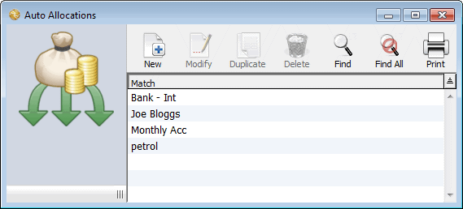
The Auto Allocation Rule window will open
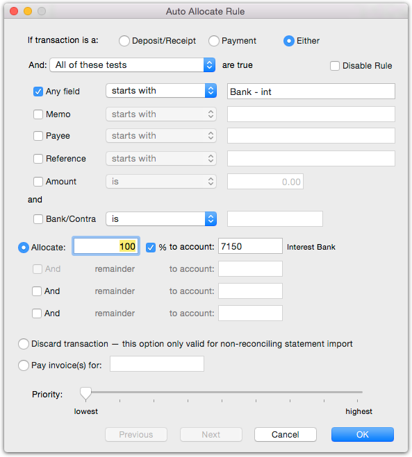
By default, this will be for both Payments and Receipts.
The scope determines how the rules are applied, and defaults to All of these tests. It can be altered by changing the top pop-up menu. The options are:
All of these tests: All of the specified tests (see Test Conditions below) are true
Any of these tests: At least one of the specified tests is true
This expression: The entered MoneyWorks expression is true (see This expression below)
Auto-match outstanding invoices: For marking an invoice with the outstanding balance as being paid. The customer/supplier code or the invoice number should be in the imported text.
These are discussed in more detail below.
There are three options:
Allocate: Allocate the amount to the specified accounts
The amount is allocated to the specified general ledger codes (up to a maximum of four). The split can be as a percentage, or as a dollar amount. Any difference between the amount of the transaction and the allocated amount will allocated to the and remainder account. If you over specify the allocation amount (e.g. allocate 120%), the and remainder line for the transaction will be negative.
Discard Transaction: Do not import the transaction
This option only affects transactions imported using the Load Bank Statement command (see Importing Bank Statements)—it is ignored if you trigger the auto-allocations when entering a transaction. You would normally set this for bank transfers and credit card payments, where the same transaction appears on both statements. If the option is set and a match occurs, the corresponding transaction will not be imported. For example if you transfer funds from your main account to your term account, the transaction will appear as a payment on the main account’s bank statement, and as a deposit on the term account’s statement. If you are importing both statements, you need to omit importing this transaction from one of them (otherwise it will be in MoneyWorks twice).
Pay Invoice(s) for: Allocate the amount to outstanding invoices. These are identified by the following rules, in order of application: (a) if the invoice number appears in the imported text, or (b) if the customer/supplier code appears in the imported text, or (c) if there is just one invoice for the amount.
Note that receipts will only be allocated to customers (debtors), and payments to suppliers (creditors).
It is possible to make rules that conflict. For example a rule for a memo that contains the word “interest” will conflict with another that is searching for “Bank interest”. MoneyWorks will allocate based on the first rule it encounters, so it is possible that a transaction with a memo of “Bank interest” will be matched with the “interest” rule, and not the “Bank interest” rule.
MoneyWorks searches for matches by Priority, from highest to lowest. So to avoid the conflict described above, just ensure that the “Bank interest” rule has a higher priority than the “interest” rule.
The Auto Allocate Rule window will close.
A rule can be composed of up to six test conditions, based on any of the available fields.
For text based data (Memo, Payee, Reference) you can use a starts with or contains. For example a test of Any field starts with “interest” will match a memo of “Interest paid”, but not “Bank Interest”. If the test was changed to contains it would match both.
Note: Text comparisons are not case sensitve, so “interest” will match with “INTEREST”.
For the amount, the test is numeric, so you can compare whether the amount is equal to, greater than, etc. some defined valued.
For the Bank/Contra test, you need to enter the general ledger account code of the bank. The test compares this to the target bank (either the bank account selected in Load Bank Statement, or, if invoking the rule during transaction entry, the bank currently selected in the Bank pop-up menu).
Note that, if the All of these tests option is selected, all the test conditions specified must be true for the rule to apply. If the Any of these tests option is selected, the the rule is applied if any one of the tests is true.
If you require more complex comparisons, then you select This expression and enter a MoneyWorks expression into the expression field. If the expression is evaluated to false (or zero), the rule will not apply; any other value will be treated as true.
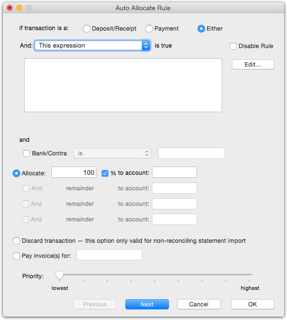
The expression can reference the keywords Memo, Name, NameOrMemo, Ref, Amount and Contra, which correspond to the available fields on the bank statement. You would need to do this for example if you want to apply a rule only to transactions within a given amount range:
name=`Smith@` and amount > 100 and amount < 200
would match only if the name started with “Smith” and the amount was between $100 and $200.
For even more complex matching, you can call a public mwScript handler from here, as in:
It is (of course) your responsibility to make sure that the script returns a sensible value in a timely manner.
When you invoke auto-allocation rules manually when entering a payments/ receipt transaction (by pressing Ctrl-U/⌘-U), the rules apply as follow:
The Memo field matches the description field on the transaction
The Name field matches the to/from field on the transaction
The Any field matches both the description and the to/from transaction fields
The Reference matches the ourref transaction field (cheque number)
The Bank/Contra matches the bank account selected in the Bank pop-up menu
The Discard transaction action is ignored.
1 The views are similar to the tabs in MoneyWorks 5 and earlier.↩︎
2 In MoneyWorks 5, the keyboard shortcuts were different; the had to be changed in MoneyWorks 6 to allow for non-modal transaction windows.↩︎
3 The field is technically called ToFrom, and this is how it appears in the Find settings window, Importing, Exporting and the Forms Designer.↩︎
4 The “New...” command in the Edit menu changes depending on the selected transaction type tab in the Transactions window.↩︎
5 In MoneyWorks 5 this was Ctrl-tab; Windows uses this to cycle through running programs.↩︎
6 The exact key combination depends on the settings in your Key preferences).↩︎
7 MoneyWorks uses Banker’s Rounding when rounding amounts to the nearest cent. This means that the value is rounded to the nearest even number, thus reducing the accumulated rounding error. It is also known as “Gaussian rounding”, and, in German, “mathematische Rundung”.↩︎
myscripts:checkstmt(name, ref, amount)
8 Prior to MoneyWorks 6, the Qty and Item (then called Product) fields were the other way.↩︎
9 This will not work if the Always Wrap option is on.↩︎
10 Images go into the Pictures folder —see Managing Your Plug-ins.↩︎
11 In MoneyWorks 6 and earlier, this dialog contained additional print options. These have been moved into the sidebar of the transaction list, and, for Details, as a separate toolbar icon.↩︎
12 To find out just how awesomely smart MoneyWorks custom forms can be see
13 In MoneyWorks 7, the Treat Job-Related Income as Pre-Payments posting option was moved to the Jobs panel in the Document Preferences.↩︎
Cash transactions are transactions that directly affect one of your bank accounts1. We use the term “Cash” somewhat loosely here to represent not only those transactions that involve the “folding stuff”, but also cheques, credit cards, automatic payments and so forth—in fact any financial transaction that is not an invoice.
There are two types of cash transactions: receipts and payments, and each type has its own tab view in the Transactions window. In addition, you can transfer funds between bank accounts with the Transfer Funds command.
A Payment represents money that has left one of your bank accounts. If the payment is for an invoice that has already been entered into MoneyWorks it will need to be processed specially— see Paying Your Creditors.
If the payment is for a cash purchase of some sort, proceed as follows:
A transaction entry window will open.
Tip: Use the keyboard shortcut to change the type:
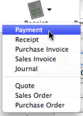
For a Payment press Alt-Shift-1/Ctrl-Shift-1For a Receipt press Alt-Shift-2/Ctrl-Shift-2
Note: MoneyWorks will (after confirmation) clear any information in a transaction when the type is altered.
Use the Type menu
to set the transaction type.
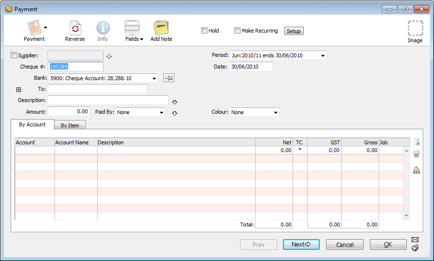
The supplier’s name will appear in the To field. If you have the address fields showing, the address will also be displayed. If payment is being made for an invoice see Paying Your Creditors2.
Bank pop-up menu
The pop-up menu will be displaying the default bank account for the transaction type. Set the pin next to the bank menu to change the default
If you have entered a supplier code into the Supplier field, the To field will already contain the supplier’s name.
You can enter up to 1000 characters into this field.
The OK and Next buttons dim when an amount is entered into the Amount field. The transaction is not complete until you have allocated the total amount to one or more accounts.
Set the Paid By pop-up
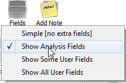
This indicates the method of the transaction (cheque, cash etc.)—for payments this is purely for your own information.Additional fields may be shown on the entry screen. These are controlled by the Views toolbar button. See Fields further details of these fields.
Set the details tab to Service or Product, depending on
MoneyWorks will have inserted a reference number one greater than the previously entered one. If this is correct, you need not type anything in.
If the Supplier field has a creditor code in it, this will have
Use the Views menu to alter the number of fields.
Historically this was the cheque number, but if you are not using cheques any more then it is just a reference number.
By default, this will contain today’s date or the last date used.
defaulted to Payment on Invoice (not MoneyWorks Cashbook).
The Amount for the payment needs to be allocated to one or more accounts before the transaction can be entered.
See the section Entering Detail Lines to find out how to enter detail lines by account code or by product code
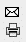
Note that the OK and Next buttons remain dimmed until the total gross amount and the total of the detail lines balance.
Set the print and/or post options if you want to print out a payment advice/cheque, or post the transaction when it is accepted
When the details of the transaction are complete, click
the Next button or press the keypad-enter key to enter this transaction and bring up a new Payment form
Click OK if this is the last payment to be entered. Clicking Cancel discards the transaction.
A Receipt represents money that has entered one of your bank accounts, or at least has been received for banking at a later time.
If the receipt is for payment of an invoice that you have already entered into MoneyWorks it will need to be processed specially— see Receiving Payment for Sales Invoices. If the receipt is for a cash sale of some sort, or for other income (such as interest earned), proceed as follows:
The new transaction window will open.
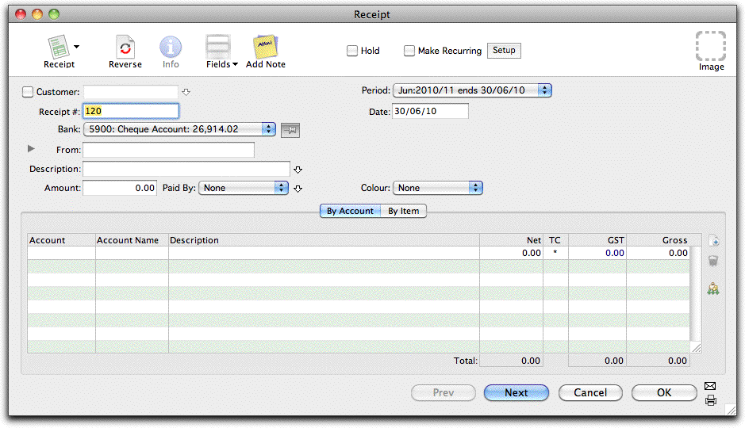
The customer’s name will automatically appear in the From field.
Enter the receipt number into the Receipt # field
MoneyWorks will have inserted a number one greater than the previously used one. If this is correct, you need not type anything in.
If you want, your receipt numbers can be prefixed by non-numeric characters. When MoneyWorks inserts the next receipt number for you, the non-numeric characters (and any leading zeros) will be prepended to the number. For example: If you previously entered “CR00405”, MoneyWorks will enter “CR00406” for you in the next Receipt transaction.
By default, this will contain today’s date or the last date used.
The pop-up menu will be displaying the default bank account for the transaction type. Set the pin next to the bank menu to change the default.
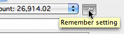
Click the pin to set the default bank account.
If the Paid By pop-up menu is itself highlighted, you can press Ctrl-downarrow/⌘-downarrow.
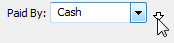
Click the down arrow next to the
Note: If you accumulate receipts for subsequent banking, you should use a bank
The Receipt Details screen will be displayed—the details
Paid By menu.
holding accounting for the receipt. When you finally come to bank the money, use the Banking command.
Note: In MoneyWorks Gold the display of the bank balance is controlled by the
See Balances in Bank Pop-up user privilege — see Multiuser
You can enter up to 200 characters into this field. Entering a customer code into the Customer field, automatically fills out the From field.
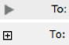
If the payer details do not fit on a single line, or you want to enter address details, click the address disclosure control to show the full mail and delivery addresses — see Viewing the Address Fields.of this depend on whether you are processing a credit card or another form of payment.
field
Mac and Windows disclosure icons
You can enter up to 1000 characters into this field—press Ctrl- downarrow/⌘-downarrow to see the full description field.
The OK and Next buttons dim when an amount is entered into the Amount field. The transaction is not complete until you have allocated the amount to one or more accounts.
Set the Paid By pop-up
Setting this determines how the transaction will be printed on the deposit slip in the banking command. “Cash” transactions are aggregated as a single figure. Other transactions are listed individually.
Enter the receipt details—you only need to do this if they differ from those displayed next to the customer code (i.e. on the customer record).
Additional fields can be displayed using the Views toolbar button.
The total Amount of the Receipt needs to be allocated to one or more accounts before the transaction can be entered.
See the section Entering Detail Lines to find out how to enter detail lines by account code or by product code
Note that the OK and Next buttons remain dimmed until the total gross amount and the total of the detail lines balance.
Set the print and post options if you want to print out a tax receipt form or post the transaction when it is accepted
pop-up menu
Enter any text in the optional Message text box
This message will be printed on all the receipts being printed.
Check the Print “Copy” if Already Printed option if you are reprinting a
the print and post options.
If this option is checked and the receipt has already been printed, the words “Copy of” appear on it. If the receipt has not already been printed this is
Click the OK button if this is the last payment to be entered. Clicking Cancel
discards the transaction.